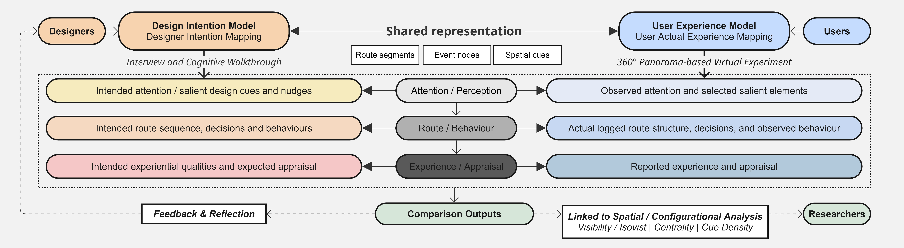

Move360
360° behavioural experimentation platform
Designed and developed a configurable web-based platform supporting experiment configuration, interactive navigation, multimodal data collection and visualisation.

360° behavioural experimentation platform
Designed and developed a configurable web-based platform supporting experiment configuration, interactive navigation, multimodal data collection and visualisation.

Grasshopper · SUTD · 2021–2023
Developed and validated a Grasshopper-based pedestrian simulation workflow for “A Digital Planning and Design Toolchain for Multimodal Predictive Evaluation,” supporting early-stage design evaluation.